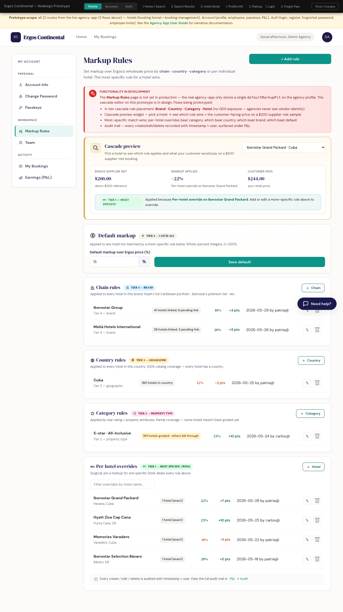
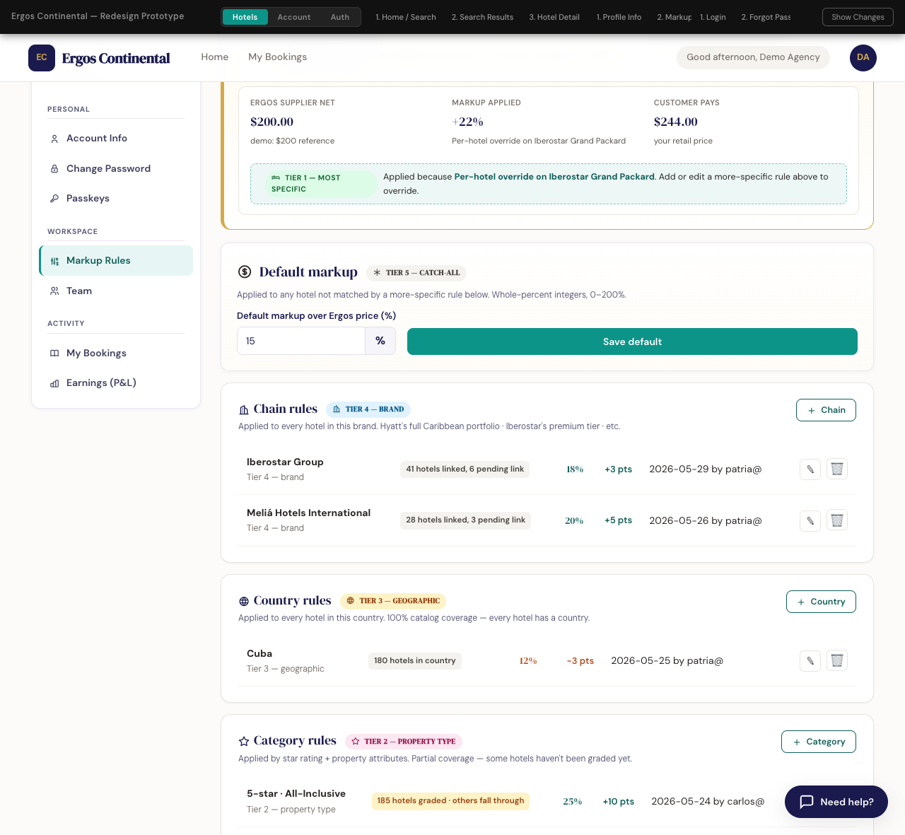
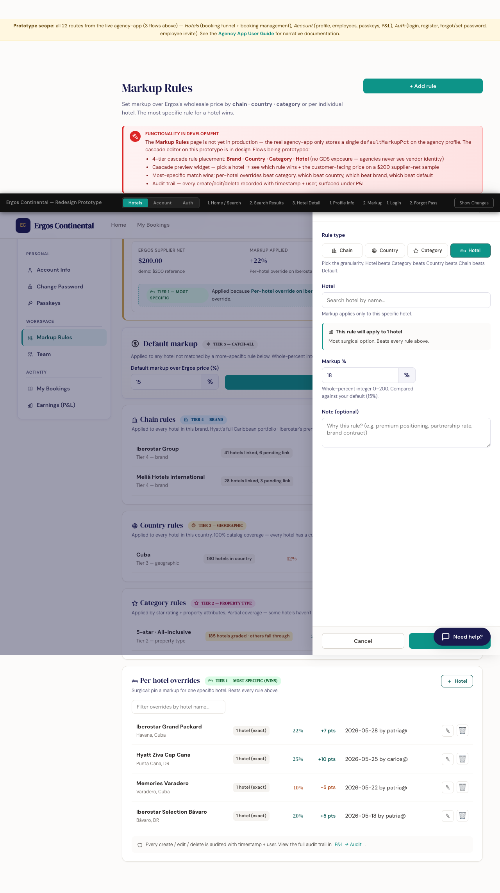

What this document covers. Travel agencies set the markup they earn over Ergos's wholesale price (the Ergos sell) using a 4-tier cascade: Brand → Country → Category → Hotel, with a default catch-all. The most-specific matching rule wins. This guide explains the tiers, the resolver, where it's edited, where it's audited, and the booking-time snapshot. Prototype
Qué cubre este documento. Las agencias de viajes configuran el markup que ganan sobre el precio mayorista de Ergos (el Ergos sell) usando una cascada de 4 niveles: Marca → País → Categoría → Hotel, con un valor por defecto como catch-all. La regla más específica que coincida gana. Esta guía explica los niveles, el resolutor, dónde se edita, dónde se audita y la instantánea al momento de la reserva. Prototipo
1. Why a cascade replaced the single default 1. Por qué una cascada reemplazó al valor por defecto único
Originally each agency had one number, TravelAgency.defaultMarkupPct, applied uniformly to every booking. That model could not express "12% on Meliá hotels, but 18% on Iberostar in Cuba, and 22% on the specific Iberostar Grand Packard property." Configuring rules per individual hotel across an inventory of approximately 100,000 hotels is not viable. The cascade lets each agency place one rule at the broadest level that fits its commercial strategy, and override more specifically only where needed.
Originalmente cada agencia tenía un único número, TravelAgency.defaultMarkupPct, aplicado uniformemente a cada reserva. Ese modelo no podía expresar "12% en hoteles Meliá, pero 18% en Iberostar en Cuba, y 22% en el Iberostar Grand Packard específico." Configurar reglas por cada hotel individual sobre un inventario de aproximadamente 100.000 hoteles no es viable. La cascada permite a cada agencia colocar una regla en el nivel más amplio que se ajuste a su estrategia comercial, y sobrescribirla con más especificidad solo donde sea necesario.
gds scope, the agency UI never exposes vendor identity. Agencies do not see whether a hotel came from Hotetec, Dingus, Restel, or Juniper. Bulk-editing pricing by GDS would leak supplier information and confuse the mental model — the agency thinks in terms of hotels, brands, geography, and property type, not which API the inventory was sourced from.
Aunque la cascada interna de Ergos tiene un scope gds, la UI de la agencia nunca expone la identidad del proveedor. Las agencias no ven si un hotel vino de Hotetec, Dingus, Restel o Juniper. Editar precios masivamente por GDS filtraría información del proveedor y confundiría el modelo mental — la agencia piensa en términos de hoteles, marcas, geografía y tipo de propiedad, no en qué API se obtuvo el inventario.
2. The four tiers (most specific → least specific) 2. Los cuatro niveles (de más específico → menos específico)
| Tier | Targets | Example | Typical rule count |
|---|---|---|---|
| 1. Hotel | A single hotel by id | "Iberostar Grand Packard → 22%" | 0–10 (surgical overrides) |
| 2. Category | A property classification (e.g. 5-star All-Inclusive) | "5-star AI → 20%" | 0–5 |
| 3. Country | An ISO country code | "Cuba → 14%" | 0–20 |
| 4. Brand | A hotel chain by id | "Iberostar → 18%" | 0–50 |
| Default | Catch-all on the agency profile | defaultMarkupPct = 15% | Always 1 |
| Nivel | Objetivo | Ejemplo | Cantidad típica de reglas |
|---|---|---|---|
| 1. Hotel | Un único hotel por id | "Iberostar Grand Packard → 22%" | 0–10 (overrides puntuales) |
| 2. Categoría | Una clasificación de propiedad (ej. 5 estrellas Todo Incluido) | "5 estrellas AI → 20%" | 0–5 |
| 3. País | Un código de país ISO | "Cuba → 14%" | 0–20 |
| 4. Marca | Una cadena hotelera por id | "Iberostar → 18%" | 0–50 |
| Por defecto | Catch-all en el perfil de la agencia | defaultMarkupPct = 15% | Siempre 1 |
Tier 1 is the most specific — a rule for one hotel beats a rule that targets that hotel's brand. Tiers 2 and 3 are orthogonal at the conceptual level (a hotel can be a 5-star property and in Cuba), but the resolver picks Category before Country, on the rule that "what the property is" is a stronger commercial signal than "where the property is." Brand is the broadest tier — it covers a chain's entire inventory.
El nivel 1 es el más específico — una regla para un hotel gana a una regla que apunta a la marca de ese hotel. Los niveles 2 y 3 son ortogonales a nivel conceptual (un hotel puede ser una propiedad de 5 estrellas y estar en Cuba), pero el resolutor elige Categoría antes que País, bajo la regla de que "qué es la propiedad" es una señal comercial más fuerte que "dónde está la propiedad". Marca es el nivel más amplio — cubre todo el inventario de una cadena.
3. The Markup Rules editor (agency-app) 3. El editor de Markup Rules (agency-app)
Agency staff edit their rules on the agency-app's /markup-rules page, accessed from My Account → Workspace → Markup Rules. The page lists rules grouped by tier and includes a cascade preview widget that lets the agency check, before saving, exactly which rule will apply to any given hotel.
El personal de la agencia edita sus reglas en la página /markup-rules de la agency-app, accesible desde Mi Cuenta → Workspace → Markup Rules. La página lista las reglas agrupadas por nivel e incluye un widget de vista previa de la cascada que permite a la agencia comprobar, antes de guardar, exactamente qué regla aplicará a cualquier hotel dado.

Cascade preview widget
Widget de vista previa de la cascada
The preview widget removes guesswork. The agency picks any hotel from the inventory, and the widget shows: which of their rules wins, the resulting markup percentage, and the customer-facing price on a sample $200 supplier-net booking. Changes save once committed — the preview is a dry run.
El widget de vista previa elimina la incertidumbre. La agencia elige cualquier hotel del inventario, y el widget muestra: cuál de sus reglas gana, el porcentaje de markup resultante y el precio cliente sobre una reserva de muestra de $200 net del proveedor. Los cambios se guardan una vez confirmados — la vista previa es una simulación.

Adding a rule
Añadir una regla
Clicking + Add rule opens a side drawer where the agency picks a tier (Brand / Country / Category / Hotel), then picks the target within that tier (e.g. "Cuba" for Country), and enters the markup percent (whole-percent integer, 0–200). The drawer can also delete or edit existing rules.
Al hacer clic en + Añadir regla se abre un cajón lateral donde la agencia elige un nivel (Marca / País / Categoría / Hotel), luego elige el objetivo dentro de ese nivel (ej. "Cuba" para País), e ingresa el porcentaje de markup (entero porcentual, 0–200). El cajón también permite eliminar o editar reglas existentes.

4. How the resolver walks the tiers 4. Cómo el resolutor recorre los niveles
For every booking, the resolver walks the agency's rules in order of specificity. The first match wins; remaining tiers are skipped. If no tier matches, the default is used.
Para cada reserva, el resolutor recorre las reglas de la agencia en orden de especificidad. La primera coincidencia gana; los niveles restantes se omiten. Si ningún nivel coincide, se usa el valor por defecto.
// Pseudocode — agency-side resolver (mirrors d1ResolveAgencyTier in the prototype)
function resolveAgencyMarkupPct(agency, hotel) {
// 1. Hotel-specific override
const hotelRule = agency.rules.hotel.find(r => r.targetId === hotel._id);
if (hotelRule) return { pct: hotelRule.pct, source: 'hotel', label: hotel.name };
// 2. Category match (e.g. 5-star AI)
const catRule = agency.rules.category.find(r => hotel.categories.includes(r.targetId));
if (catRule) return { pct: catRule.pct, source: 'category', label: categoryName(catRule.targetId) };
// 3. Country match (ISO code)
const countryRule = agency.rules.country.find(r => r.targetId === hotel.country);
if (countryRule) return { pct: countryRule.pct, source: 'country', label: countryName(countryRule.targetId) };
// 4. Brand / chain match
const brandRule = agency.rules.brand.find(r => r.targetId === hotel.chainId);
if (brandRule) return { pct: brandRule.pct, source: 'brand', label: brandName(brandRule.targetId) };
// 5. Default — always wins if nothing else matched
return { pct: agency.defaultMarkupPct, source: 'default', label: 'Agency default' };
}// Pseudocódigo — resolutor del lado de la agencia (espeja d1ResolveAgencyTier en el prototipo)
function resolveAgencyMarkupPct(agency, hotel) {
// 1. Override por hotel específico
const hotelRule = agency.rules.hotel.find(r => r.targetId === hotel._id);
if (hotelRule) return { pct: hotelRule.pct, source: 'hotel', label: hotel.name };
// 2. Coincidencia por categoría (ej. 5 estrellas AI)
const catRule = agency.rules.category.find(r => hotel.categories.includes(r.targetId));
if (catRule) return { pct: catRule.pct, source: 'category', label: categoryName(catRule.targetId) };
// 3. Coincidencia por país (código ISO)
const countryRule = agency.rules.country.find(r => r.targetId === hotel.country);
if (countryRule) return { pct: countryRule.pct, source: 'country', label: countryName(countryRule.targetId) };
// 4. Coincidencia por marca / cadena
const brandRule = agency.rules.brand.find(r => r.targetId === hotel.chainId);
if (brandRule) return { pct: brandRule.pct, source: 'brand', label: brandName(brandRule.targetId) };
// 5. Por defecto — siempre gana si nada más coincide
return { pct: agency.defaultMarkupPct, source: 'default', label: 'Por defecto' };
}Worked example — Sol Mar Travel × Iberostar Grand Packard
Ejemplo trabajado — Sol Mar Travel × Iberostar Grand Packard
Sol Mar Travel sells the Iberostar Grand Packard in Havana, Cuba. Sol Mar's rules:
Sol Mar Travel vende el Iberostar Grand Packard en La Habana, Cuba. Reglas de Sol Mar:
- Hotel: Iberostar Grand Packard → 18%
- Country: Cuba → 14%
- Default: 15%
- Hotel: Iberostar Grand Packard → 18%
- País: Cuba → 14%
- Por defecto: 15%
The resolver returns 18% from the Hotel tier. The Country rule (14%) and Default (15%) are skipped because a more-specific match exists. On a $200 Ergos sell, the customer pays $200 × (1 + 0.18) = $236.00. Sol Mar earns the $36 markup income.
El resolutor devuelve 18% del nivel Hotel. La regla de País (14%) y el valor por defecto (15%) se omiten porque existe una coincidencia más específica. Sobre $200 de Ergos sell, el cliente paga $200 × (1 + 0.18) = $236.00. Sol Mar gana los $36 de ingreso por markup.
5. The backoffice audit view 5. La vista de auditoría del backoffice
Ergos backoffice admins can audit the resulting price for any hotel × agency pair on the Hotel Price Composition screen. The per-agency drilldown walks the same cascade and shows, for the selected agency on the selected hotel, which tier won and which were skipped — using the same precedence as the agency-side resolver.
Los admins del backoffice de Ergos pueden auditar el precio resultante para cualquier par hotel × agencia en la pantalla de Composición de Precio de Hotel. El drilldown por agencia recorre la misma cascada y muestra, para la agencia seleccionada en el hotel seleccionado, qué nivel ganó y cuáles se omitieron — usando la misma precedencia que el resolutor del lado de la agencia.

This dual surface — configuration on the agency side, audit on the backoffice side — lets disputes be reconstructed exactly. The auditor can answer "why is Agency A's price different from Agency B's for the same room?" by clicking through each agency's row and seeing the cascade winner side-by-side.
Esta doble superficie — configuración del lado de la agencia, auditoría del lado del backoffice — permite reconstruir las disputas exactamente. El auditor puede responder "¿por qué el precio de la Agencia A es diferente del de la Agencia B para la misma habitación?" haciendo clic en la fila de cada agencia y viendo el ganador de la cascada lado a lado.
6. Booking-time snapshot 6. Instantánea al momento de la reserva
When a booking freezes, the agency's effective markup is captured as agencyMarkupPctSnapshot on the booking document — same field name as today. The new addition is agencyMarkupSourceSnapshot, which records:
Cuando una reserva se congela, el markup efectivo de la agencia se captura como agencyMarkupPctSnapshot en el documento de reserva — mismo nombre de campo que hoy. La nueva adición es agencyMarkupSourceSnapshot, que registra:
| Field | Type | Meaning |
|---|---|---|
tier | 'hotel' | 'category' | 'country' | 'brand' | 'default' | Which tier of the cascade won |
targetId | string | null | The id that matched (hotel id, chain id, country code, etc.). null when tier is 'default'. |
label | string | Human-readable label captured for display ("Iberostar Group", "Cuba", "5-star AI", etc.) — robust against later renames of the source entity. |
| Campo | Tipo | Significado |
|---|---|---|
tier | 'hotel' | 'category' | 'country' | 'brand' | 'default' | Qué nivel de la cascada ganó |
targetId | string | null | El id que coincidió (id de hotel, id de cadena, código de país, etc.). null cuando el nivel es 'default'. |
label | string | Etiqueta legible capturada para visualización ("Iberostar Group", "Cuba", "5 estrellas AI", etc.) — resistente a renombrados posteriores de la entidad origen. |
This makes after-the-fact disputes answerable without re-running the resolver against possibly-different current rules. If Sol Mar changed their Country · Cuba rule from 14% to 10% last week, the bookings that froze before the change still report agencyMarkupPctSnapshot: 18 and agencyMarkupSourceSnapshot: { tier: 'hotel', targetId: 'IBE-GP-HAV', label: 'Iberostar Grand Packard' } — the historical truth, not what the resolver would compute today.
Esto hace que las disputas posteriores sean respondibles sin tener que volver a ejecutar el resolutor contra reglas actuales posiblemente diferentes. Si Sol Mar cambió su regla País · Cuba de 14% a 10% la semana pasada, las reservas que se congelaron antes del cambio aún reportan agencyMarkupPctSnapshot: 18 y agencyMarkupSourceSnapshot: { tier: 'hotel', targetId: 'IBE-GP-HAV', label: 'Iberostar Grand Packard' } — la verdad histórica, no lo que el resolutor calcularía hoy.
7. Conventions, status, links 7. Convenciones, estado, enlaces
defaultMarkupPct follow the platform's whole-percent integer convention: 15 means 15%, min 0, max 200. UI input controls validate this; the backend Zod schema rejects out-of-range or non-integer values at the API boundary. Internal math divides by 100 exactly once via pct(n) = n/100.
Los cuatro valores de regla por nivel y defaultMarkupPct siguen la convención de entero porcentual entera de la plataforma: 15 significa 15%, min 0, max 200. Los controles de input de la UI validan esto; el esquema Zod del backend rechaza valores fuera de rango o no enteros en el borde de la API. La matemática interna divide entre 100 exactamente una vez vía pct(n) = n/100.
Status & implementation
Estado e implementación
Prototype This page (/markup-rules) is not yet in production. The real agency-app today only stores a single TravelAgency.defaultMarkupPct. Implementation tracked as USER_STORIES A1 — see documentation/_user_stories_pending/USER_STORIES.md. The simplification decisions captured during prototyping (no GDS axis, tier semantics, snapshot fields) appear in the Design decisions log at the bottom of that file.
Prototipo Esta página (/markup-rules) aún no está en producción. La agency-app real hoy solo almacena un único TravelAgency.defaultMarkupPct. La implementación se rastrea como USER_STORIES A1 — ver documentation/_user_stories_pending/USER_STORIES.md. Las decisiones de simplificación capturadas durante el prototipado (sin eje GDS, semántica de niveles, campos del snapshot) aparecen en el log de decisiones de diseño al final de ese archivo.
Where to click through
Por dónde hacer clic
- Agency-app prototype: /prototypes/agency-app/ → My Account → Workspace → Markup Rules
- Backoffice prototype: /prototypes/backoffice/ → Hotel Price tab
- Sibling document: Ergos-side pricing policy & hotel brands — the backoffice cascade that produces Ergos sell, which this agency cascade then marks up.
- Prototipo agency-app: /prototypes/agency-app/ → Mi Cuenta → Workspace → Markup Rules
- Prototipo backoffice: /prototypes/backoffice/ → pestaña Hotel Price
- Documento hermano: Política de precios del lado de Ergos y marcas hoteleras — la cascada del backoffice que produce Ergos sell, sobre el cual esta cascada de la agencia luego aplica markup.